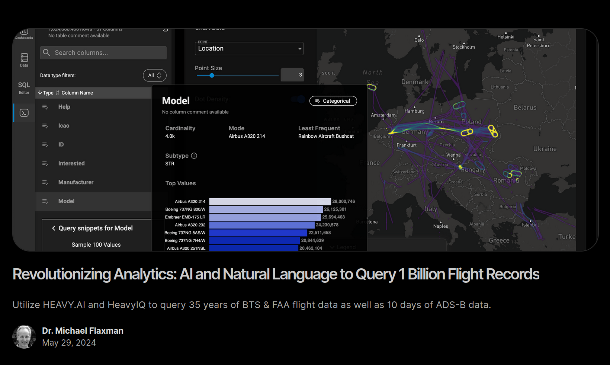

Relational Document Key-Value Object-Oriented Object-Relational Multi-Modal Graph RDF/Triplestore XML Streaming/CEP Differential Vector Feature-Store Blob-Store Time-Series Message Queues Text Search Blockchain NoSQL NewSQL Navigational Hierarchical Filesystems Column-Oriented Wide-Column Semistructured In-Memory Data Grid Cache Map-Reduce Geospatial Raster/Scientific Reactive Data Lake Data Mesh Data Fabric Embedded CLI Low Code Array-Oriented GPU Offline/Asynchronous Version Control CRDT Distributed Consensus P2P/DHT Serverless Edge
See also: Borges Classification Of Animals.
— mapD/OmniSci/HeavyAI
— Kinetica
— BlazingDB/BlazingSQL
— SQReam
— AresDB
— Alenka
In theory:
— can run certain analytical queries faster;
— high-cardinality aggregations and JOINs;
— complex calculations for geospatial processing;
In practice:
— only a small subset of operations is accelerated;
— do not scale past the GPU RAM size;
— the code is difficult to maintain;
— poor fit for SaaS and public clouds;
GPU databases are feasible when the working data set fits in the GPU memory or the amount of computations is large compared to the data volume (ops/byte);
... assuming they can run your queries, which is not certain;
Source: ClickBench — a Benchmark For Analytical DBMS,
https://benchmark.clickhouse.com/
Maybe they can do fast data visualization?
There is no need for a fancy GPU database.
You can do much better using a boring database, ClickHouse.
Demo: https://adsb.exposed/
— contains >100 billion records, visualized in real-time in your browser;
— backed by a single server running ClickHouse;
SQL at the edge. Provide data for your dashboards and visualizations without building complex API endpoints, just by executing SQL straight from the user's browser.
Examples:
— Seafowl: a query engine packaged into a web server.
— PostgREST: a web API server for Postgres.
— Supabase: Postgres SaaS with builtin API endpoints.
What do they solve:
— authentication and access control;
— rate limiting, quotas, load balancing, and resource isolation;
— input/output formats and interfaces;
— query caching;
It should be an inherent part of the DBMS.
A good database is already a server,
and already provides authentication, access control, rate limiting and resource management, caching, etc.
So, nothing is wrong if it's also a web server.
My favorite database, ClickHouse, provides HTTPs API out of the box.
So you can query it from the browser:
const response = await fetch(
clickhouse_url,
{ method: "POST", body: `
SELECT
count() AS total,
sum(check_name LIKE 'AST fuzzer%') AS fuzz,
FROM checks
WHERE check_start_time >= now() - INTERVAL ${hours} HOUR
FORMAT JSON` });
— InfluxDB;
— TimescaleDB;
— TDEngine;
— rrdtool;
— Graphite;
— OpenTSDB;
— QuestDB;
— QuasarDB;
— Mimir;
— Prometheus (Thanos, Cortex, M3, Mimir, VictoriaMetrics);
Which one is better?
Time series databases are not the best for time series!
OLAP databases, such as ClickHouse, do the best.
New versions of time series databases, such as InfluxDB 3.0 and QuestDB approach it by using the same data structures as OLAP databases (column-oriented data format, merge-tree compaction, vectorized query processing).
SciTS: A Benchmark for Time-Series Databases in Scientific Experiments and Industrial Internet of Things,
Jalal Mostafa, Sara Wehbi, Suren Chilingaryan, Andreas Kopmann, 2022.
Some people say that ClickHouse is a time series database.
This could be just an implication of the fact that it is good at time series.
— MongoDB;
— RethinkDB;
— CouchDB;
...
— PartiQL;
— Sneller;
But: SQL/JSON exists;
But: PostgreSQL has the JSONB data type;
But: FerretDB reimplements MongoDB API on top of Postgres;
But: ClickHouse has the JSON data type;
CREATE TABLE bluesky_raw
(
time DateTime DEFAULT now(),
data JSON,
PRIMARY KEY (time)
)
Inserting the data in real-time:
websocat '
wss://jetstream1.us-east.bsky.network/subscribe?wantedCollections=app.*' |
clickhouse-client --query "
INSERT INTO bluesky_raw (data) FORMAT JSONAsObject"
{
"data": {
"commit" : {
"cid" : "bafyreigz46do3wx2g5lpabfnvrfh6jd3c5xflygjaci7vv22d7rtwtlyeu",
"collection" : "app.bsky.feed.generator",
"operation" : "update",
"record" : {
"$type" : "app.bsky.feed.generator",
"avatar" : {
"$type" : "blob",
"mimeType" : "image\/jpeg",
"ref" : {
"$link" : "bafkreic6pprqlzvmh6eavcbggg37pa47ikgmi5t6k3fw5n2m4ygk5pmh2u"
},
"size" : "842492"
},
"createdAt" : "2024-11-19T13:40:23.060Z",
"description" : "その時々の季節の花を集めるフィードです。\nおよそ300種類の花の名前のほかに「咲いた」「満開」というような関連ワードを収集します。\nまた、「季節の花」という言葉があればフィードに表示されます。\n\n当面テスト走行中です。\n\n＊当フィードに拾われたくない場合は、ポストもしくは画像ALTテキスト内に「nofeed」という言葉を記述いただければ除外する設定にしています。",
"did" : "did:web:skyfeed.me",
"displayName" : "季節の花",
"skyfeedBuilder" : {
"blocks" : [
{
"firehoseSeconds" : "86400",
"id" : "aaakaj7hpdxq4",
"inputType" : "firehose",
"labels" : [],
"type" : "input"
},
{
"id" : "aaakaketu67wu",
"subject" : "image_count",
"type" : "remove"
},
{
"id" : "aaai7how5stqg",
"subject" : "item",
"type" : "remove",
"value" : "reply"
},
{
"id" : "aaapnlz3wfml2",
"language" : "ja",
"operator" : "!=",
"subject" : "language",
"type" : "remove"
},
{
"id" : "aaapljaonsfk4",
"subject" : "item",
"type" : "remove",
"value" : "repost"
},
{
"id" : "aaapm5dj7qxte",
"subject" : "item",
"type" : "remove",
"value" : "has_labels"
},
{
"caseSensitive" : 0,
"id" : "aaaivyzzaqth2",
"invert" : 1,
"target" : "text|alt_text",
"type" : "regex",
"value" : "nofeed"
},
{
"id" : "aaaiqackdmyco",
"listUri" : "at:\/\/did:plc:djg4h7kncixfole5tu5i4vjy\/app.bsky.graph.list\/3kwmfu5cupz2o",
"subject" : "list",
"type" : "remove"
},
{
"caseSensitive" : 1,
"id" : "aaakaj7hpdlt2",
"target" : "text|alt_text",
"type" : "regex",
"value" : "季節の花|アカツメクサ|アガパンサス|アカンサス|アケビ|アゲラタム|アサガオ|アジサイ|アジュガ|アスチルベ|アセビ|アネモネ|アベリア|アマドコロ|アマリリス|アメリカデイゴ|アヤメ|アルケミラ・モリス|アルストロメリア|アロエ|アンズ|イカリソウ|イソギク|イチハツ|イヌタデ|イボタノキ|インパチェンス|ウグイスカグラ|ウツギ|エゴノキ|エニシダ|エビネ|オイランソウ|オウバイ|オオイヌノフグリ|オオデマリ|オオベンケイソウ|オオムラサキツユクサ|オキザリス|オシロイバナ|オダマキ|オトメツバキ|オミナエシ|カーネーション|ガーベラ|カキツバタ|ガザニア|カスミソウ|カタクリ|カネノナルキ|カモミール|カラスノエンドウ|カラタチ|カラタネオガタマ|カランコエ|カリン|カルミア|カロライナジャスミン|カンツバキ|カンパニュラ|カンヒザクラ|キキョウ|キクイモ|キクモモ|キショウブ|キソケイ|キブシ|ギボウシ|キョウチクトウ|キルタンサス|キンギョソウ|キングサリ|キンケイギク|キンシバイ|キンセンカ|キンモクセイ|キンレンカ|クサギ|クジャクソウ|クチナシ|グラジオラス|クリサンセマム・ノースポール|クリサンセマム・ムルチコーレ|クリスマスローズ|クレマチス|クロッカス|クンシラン|ケイトウ|コスモス|コデマリ|コブシ|コルチカム|サクラ|ザクラ|サクラソウ|ザクロ|サザンカ|サルスベリ|サルビア|サンシュユ|サンタンカ|ジギタリス|シクラメン|シジミバナ|シネラリア|シモツケ|シャガ|シャクナゲ|シャクヤク|シャコバサボテン|ジャノメエリカ|シュウカイドウ|ジュウガツザクラ|シュウメイギク|シュンラン|シラー|シラン|シロタエギク|シロツメクサ|ジンチョウゲ|スイートアリッサム|スイートピー|スイカズラ|スイセン|スイレン|スズラン|スノーフレーク|スミレ|セイタカアワダチソウ|セイヨウノコギリソウ|セイヨウフウチョウソウ|ゼフィランサス|ゼラニウム|センダン|センニチコウ|ソメイヨシノ|タイサンボク|ダイヤモンドリリー|タケニグサ|タチアオイ|タニウツギ|タマスダレ|ダリア|タンポポ|たんぽぽ|チオノドクサ|チューリップ|ツキヌキニンドウ|ツツジ|ツユクサ|ツルニチニチソウ|ツワブキ|テイカカズラ|デモルフォセカ|デルフィニウム|ドクダミ|トケイソウ|トサミズキ|トベラ|トルコキキョウ|トレニア|ナズナ|ナツツバキ|ナデシコ|ナンテン|ニゲラ|ニセアカシア|ニチニチソウ|ニワウメ|ニワザクラ|ニワゼキショウ|ネジバナ|ネズミモチ|ネムノキ|ネモフィラ|ノウゼンカズラ|ノースポール|バーベナ|ハイビスカス|ハギ|ハクサンボク|ハクチョウゲ|ハクモクレン|ハコネウツギ|ハゴロモジャスミン|ハスの花|ハナカイドウ|ハナショウブ|ハナズオウ|ハナダイコン|ハナトラノオ|ハナニラ|ハナミズキ|ハナモモ|ハハコグサ|ハボタン|ハマギク|ハマナス|ハマボウ|ハマユウ|バラ|ハルジオン|ハンゲショウ|パンジー|ヒイラギナンテン|ヒガンバナ|ヒトツバタゴ|ヒナギク|ヒマワリ|ヒメオドリコソウ|ヒメジョオン|ヒメリンゴ|ヒヤシンス|ヒュウガミズキ|ビョウヤナギ|ビヨウヤナギ|ピラカンサ|ヒルガオ|ヒルザキツキミソウ|フェイジョア|フキ|フクシア|フクジュソウ|フサアカシア|フジバカマ|フッキソウ|ブッドレア|フヨウ|ブラシノキ|フリチラリア|ヘクソカズラ|ベコニア|ベゴニア|ペチュニア|ベニカナメモチ|ベニバナトチノキ|ヘリクリサム|ペンタス|ホウチャクソウ|ポーチュラカ|ホタルブクロ|ホテイアオイ|ホトケノザ|ポピー|マーガレット|マツバギク|マツバボタン|マツムシソウ|マツヨイグサ|マリーゴールド|マンサク|ミズヒキ|ミセバヤ|ミソハギ|ミツマタ|ミモザ|ミヤコワスレ|ムクゲ|ムスカリ|ムスカリー|ムラサキケマン|ムラサキゴテン|ムラサキツユクサ|ムラサキハナナ|モクレン|モミジアオイ|モントブレチア|ヤエヤマブキ|ヤグルマギク|ヤツデ|ヤブツバキ|ヤブラン|ヤマブキ|ヤマボウシ|ユキノシタ|ユキヤナギ|ユッカラン|ユッカ蘭|ユリ|ユリオプスデージー|ヨウシュヤマゴボウ|ラークスパー|ラナンキュラス|ラベンダー|ランタナ|リアトリス|リシマキア|リナリア|リョウブ|ルドベキア|ルピナス|レンギョウ|レンゲソウ|ロウバイ|ローズゼラニウム|ローズマリー|ワスレナグサ|ワルナスビ|悪茄子|磯菊|一初|黄菖蒲|黄素馨|黄梅|牡丹|乙女椿|夏椿|花魁草|花海棠|花虎ノ尾|花菖蒲|花盛り|花蘇芳|花桃|霞草|海老根|葛の花|蒲公英|寒椿|寒緋桜|甘野老|擬宝珠|菊芋|桔梗|吸葛|玉簾|金のなる木|金魚草|金鶏菊|金糸梅|金雀枝|金木犀|金蓮花|君子蘭|蛍袋|鶏頭|犬蓼|向日葵|孔雀草|紅花栃の木|紅葉葵|紅要黐|合歓の木|菜の花|咲いた|咲いて|分咲き|咲き始め|桜|桜草|山茶花|山法師|山茱萸|紫華鬘|紫御殿|紫陽花|紫蘭|紫露草|時計草|秋海棠|秋桜|秋明菊|臭木|十月桜|春蘭|女郎花|小手毬|松葉牡丹|松葉菊|辛夷|水仙|睡蓮|雛菊|西洋鋸草|西洋風蝶草|石楠花|石蕗|石榴|赤詰草|雪柳|千日紅|栴檀|鼠黐|待宵草|泰山木|大紫露草|大手毬|谷空木|竹煮草|昼咲月見草|苧環|朝顔|沈丁花|定家葛|庭桜|庭石菖|庭梅|碇草|杜鵑草|都忘れ|土佐水木|桃の花|藤の花|藤袴|藤棚|突抜忍冬|日向水木|日々草|馬酔木|背高泡立草|梅|萩|白山木|白丁花|白粉花|白妙菊|白木蓮|箱根空木|八手|八重山吹|半化粧|彼岸花|柊南天|姫女苑|姫林檎|百日紅|浜菊|浜朴|浜木綿|富貴草|布袋葵|芙蓉|蕗|福寿草|仏の座|母子草|宝鐸草|房アカシア|房藤空木|満開|蔓日々草|未央柳|木瓜|木五倍子|木通|木蓮|木槿|勿忘草|矢車菊|薮椿|薮蘭|葉牡丹|立葵|凌霄花|令法|蓮の花|蓮華草|連翹|露草|蝋梅|夾竹桃|屁屎蔓|捩花|枸橘|梔子|禊萩|芍薬|菫|薔薇|躑躅|鶯神楽"
},
{
"caseSensitive" : 0,
"id" : "aaaapk47ffjwg",
"invert" : 1,
"target" : "text|alt_text",
"type" : "regex",
"value" : "【.+】.+（[0-9]\/[0-9]）|.+年.+月制作|[0-9]連|.com|「好奇心が止まらない」|「奈良の八重桜」|『最果て』|『薔薇の名前』|【幽☆遊☆白書】|【トップ記事】\n• |×|♀ と ♂|080|893|１００%サクラ|30MS|3dcg|3Dアバター|3Dカード|5月の贈り物|誕生日花|AAA|ACNH|DaysAI|AIart|AIgirl|AIphoto|AI画像|AIアート|AIイラスト|AI化|AIグラビア|AI美女|AIユナ画伯|AIらぶ|Akita Pride March|ALL+PLUS|amatou.bsky.social|amazon|amzn|Amazox|ambie|AmuletSeal|Animal|AsleepEidolon|Crossing|AR|avalab|BEYOOOOONDS|BL|BLEACH|blueskychandraw|botania開拓記|Bプロ|CALL|cca後|C-due|celvoke|ChatGPT|CHOYA|cluster|CoC|cos|Cosplay|cp5377|creema|CWLS|dbd|decn|doll|doodle|DP|DQ|drawing|DUO|eldenring|ETF|ex難梅|FA|FCのマーク|FCハウス|feelNEO|FF日記|FF14|FF7|fgo|FN|Frigg聖堂裏フリマ|fumifumi_v|gaia|gif|GITADORA|gohanclub.bsky.social|GPORSERS|GPT-4o|GSフェス|gtaオンライン|ha36|Hair\/make|Harmony|Hilcrhyme|HonkaiStaiRail|阮梅|NSFW|Hentai|HOLON3点セット|shibuya.top10|iidx|i showed you|illust|illustlation|illustration|item.rakuten.co.jp|.jp|Kid Delf|KIG撮影|kissのラベンダー|kissの日|KOF96|koreiazln|KP|KPC|lgbt|lin.ee|line|Live|LUTS|M・バルガス=リョサ|MAD ATTACK|MagicTheGathering|mamekurogouchi|manekineko|MAX|MDZS|Mei:|MGゼフィランサス|MHnow|MHRise|Mi:|Mikuture|Minecraft|minne|MINSTRELダリア|mita.top10.tokyo|Miの旅|model|mon petit poussin|mtd夢|Mu:|NGS|nhkらじらー|nikke|NintendoSwitch|ℕ𝔼𝕎|ONEPIECE|OUTERWILDS|p_house|PC|PC\/PL|PIC|pixiv|PL|playing|Quest|Quick Doodle|Rattowith366days|resoniteラジオ体操部|precure|PS5|PSP|R18|reopnite|rkgk|RO|Rufus|sd_真紅|S.E.M|san_studio|Seria|SHIBUYAVOICE|shindanmaker.com|skckランド|SKIMA|SOLID WYVERNのダリア|Skyrim|SS|SSR|SS撮り|SS撮影会|SUQQU|pkg|strava|tanka|tearsofthemis|tegaki_dt|TGCF|THRIVE|TLをかわいい子が通ります見た人もやってみて|trend|Trending|TRPG|TwilightSurvivors|umeto-ki.shop-pro.jp|U-NEXT|VRChat|VRC|Vtuber|wbs|WekiMeki|Wikipedia|windbreaker|wip|www.|x.gd|XFD|Xの|youtu.be|youtube|アークナイツ|アーボック|ｱｰﾘｵｵｰﾘｵ|アーリオオーリオ|アイカツ|アイカラー|アイコレプチ|アイコン|アイスバニー|アイテム|アイドリッシュセブン|アイドル|アイドルマスターシンデレラガールズ|アイプリ|アイマスク|アイライナー|あいりすミスティリア|青エク|碧桜|青空ごはん部|アオハル|アガオ|アガスティアフルオート|アガットテイク|アキハバラ|アクアリウム|アクキー|アクスタ|アクセサリー|アグリカーネーション|アクリルガッシュ|アサガオイベ|アサガオの散る頃に|浅草梅園|アサクラ|アザラシランド|アジサイだいすきさおねこ|アジュガ少年|アスカちゃん|アスバラ|アズールレーン|アセビ見聞録|褪せ人|アセルス|アセンダン|アゾカツ|アチブ梅チャレンジ|あつ森|アディクション|アナザーエデン|あなたの紫陽花見せて|アニバーサリージュエリー|アニメ|ｱﾇﾁｬﾝT|アネモネ重症|アバター|アバラ|アピスさん|アフターヌーンティー|あべのべあ|アペン|アフタヌーンティー|阿部芙蓉美|アベリアさんとデート|甘党部|アホ梅|天ノ桜紬姫|アマリリス「|アミメハギ|編み|あみ針|編針|アヤメ・アメコミバージョン|アリスギア|有栖みつき|アルストロメリア|アルテ組|アルバライト|アルバムアート|ある日のなめこ|アルユリ|アレイズ|アロエジェル|アロエちゃん無事就職|アロエトッピング|アロエヨーグルト|アロエリーナ|アロマ|アンジェリークルミナライズ|あんスタ|アンズラグ|アンズーリシック|アンズ出た|編んだ物見せて|アンダーデッドテイカー|アンティーク|アンネのバラの教会|アンミナ|イージー|イースターエッグ|イカリング|いくよFIVE|イケオジ|池袋演芸場|イケメン|イザナギ|イザナミ|イタリアン|イタリア食品|イヅツミ|イトカワサクラ|イナズマイレブン|イヌタデちゃん|いぬぴ|犬山日語|井上梅次|イバラード|イバライド|イバラキ|イバラギン|イバラ解雇|イバラ抜いて|イバラ姫|イプシの千本桜|イベスト|イベント|イベ薫|イメージはこんな感じ|イメージビジュアル|イメージフラワー|イメソンリスト|イヤーフック|イヤリング|イラスト|イルミネーションスターズ|いろしずく紫陽花|イロモノ|インク|インク沼|インディアンズ|ヴァカンツァ・ロマンス|ヴィーナスラボ|ヴァルバラッシャー|ウィーンのバラ|ウィーンの薔薇|ヴィヴィアナ|ヴィクトリアマイル|ヴィクトリア家政|ウィザー|ウィッグ|ウィンダム|ウィンブレ|ウェイター|ヴェルサイユリゾート|ウェンぱぺ|ウォンジョンヨ|ウキウキ撮影したわ|ウケる|ウタちゃん|うちのこかわいい|ウチのコ園芸|うちの子シリーズ|うちの子箱詰め|うちの馬ティーユ|うちよそ|うどん|ウパルパ|うま！|ウマ娘|ウミユリ|梅ガム|ウメゲリータ|梅娘ちゃん|梅喧|梅木音葉|梅流し|梅本|「梅もと」|梅柚子胡椒|梅巻|梅よろし|裏組織|ウルトラソウル|ウルトラマン|ウルレア|ウンベルト・エーコ|エアーいち兄|エアライド|エアロエース|エイリアンズ|えーあいで|エオルゼア|駅メモ|エクハ|エコランダリア|エジンバラ|エステからのマツエク|エスラト|エッチ|エディラル兄弟|エディンバラ|エーフィ|エバラ|エデンの薔薇|江嶋警備|江戸切子|エトくん|エバラス|エペルくん|エリュテイア|エルデンリング|エルデン|エルナンダリアス|エルフ|エレクトリアコード|エレに行った|えれわぬ|エロゲ|エロス|演奏会|エンターグラム|エンブレム|おいしい|おいちい|おいしかった|オイルのマッサージ|桜華|王一博|姫乃樹桜華|ヒメメ〜|黄金のノクシー|桜桃忌|桜魔|桜凜|おえかき|オエねんちゃん|大寒桜賞|オークス|大喰らいは生きる|オーブ|おかか、こんぶ、梅|おかゆ|オカクリ|オカリン|おぎやはぎ|奥村雪男|おくるちゃん|おくる誕|オケラ|忍足|おしっこ|お嬢様ロボ|オスッテ|オスラさん|オタク|オダマキチーズ|オタユリ|おちょぴ|おっぱい|おでカメ|オナペ|オニユリクリア|おはなし|おはミコ|おはようカンパニュラ💐|オバラ|おひたし|帯留|オベリスク破壊|オマージュ|オマケのカキツバタ|オモ写|おやつ|オリーブオイル|おりがみ|折り紙|オリキャラ|オリジナル|オリュンポスの咆哮|オルタンス|オルトラン注入|オンラインレッスン|お供機能|お胸の桜吹雪|お線香|朝ラン|お誕生日おめでと|お通し|お梅は呪いたい|お文具さん|お文具といっしょ|お弁当|お話|おは幼虫|ガイアパンク|海賊無双|ガークリ|ガーディアンズ|カーテシランプ|カードキャプターさくら|カードスタンド|カーニバラス|カーネーションにする|カーネーション革命|カーネーション型の|ガーベラテトラ|ガーベラリミ|カーミラ|カールセーガンのコスモス|怪談|解放クエ|カヴェちゃん|カウンセラー|ガオウ様|ガオガオーン|カオス|カオスコード|鏡音リン|鏡音レン|カキツバタ6位|カキツバタくん|カキツバタ青年とスグリ少年|かき氷|かくだてカリン|カクテル|カクテル飲んできました |カクヨム|カケラ貯|カケラ溜|カコジョ|ガシャガシャ|カスタムキャスト|ガチャ|桂梅枝|カナメストーン|かな子ちゃん|花名ちゃん|かにティ馬|カバラ|カピバラ|カプ|カフェ|カプセルトイ|カペリート|カミーユ|かみ太白バラ|ガム買っ|カモミールティー|カモミールとツボ押しで|カモミールブレンド|カラオケ|カラコン|カラミティ|ガリガリ君|カリカリ梅|カリンイベ|カリンさん|花梨先輩|カリンちゃん|カリンチョリン|カリンバ|カリンをお迎え|ガルーダに見守られし梅|カルフェオン|皮ハギ|カワハギ|瓦林桜|カルミナ様| 川村文乃|カンスト|ガンダム|ガンバライド|ガンバラナイト|ガンプラ|完璧なボク|キアーベ|ギアヴァリアント|キイロハギ|魏嬰|きかんしゃトーマス|キキョウかわい|気象衛星|キスの日|キスミーフェルム|ギタドラ|きつね月|きな娘|キバライコ|キバラガメ|ギフト|ぎふメディアコスモス|キモノ|キャザクラ|ギャザクラ|ギャビー|キャラ|ギャラクシースパイラル|キャラバンストーリーズ|キャリープラチナ|キュベレイ|境界のRINNE|キラパラ|きらめきパラダイス|キリスバ|桐生キキョウ|ギルド|キルヒアイス|きんいろモザイク|金木犀ティー|キンモクセイティー|きんモザ|クエスト|空想ファンタジーアート|グーテチャレンジ|くず桜|「朽ちないサクラ」|クッキー|グッズ|クッパ|くノ一ツバキの胸の内|クビアカツヤカミキリ|クマハギ|久米桜|供養|クライナー|グラフキー|クラフト|グラブル|グラユリ|グラン・コスモス|クリアできそう|クリアフラワー|クリエイター|栗駒こまる|クリストバライト|クリニック受付|グルーシャ|グレイモヤ|クロスジホソアワフキ|グレユリ|クロスステッチ|クロッキー|グロ画像|くわぶぜ|グングニル|ケアンズ|ケースシラー住宅価格|ゲーミング紫陽花|ゲーム|ゲオ、コスモス、マックスバリュー|ケツから|ゲッター|ゲ呪|限定色|けんれ～|ゲ謎|ゲバラ|げみにずむ|けものフレンズ|げる14旅するフギンくん|ごうたんか|航空自衛隊|こうばこずわり寝のちらみせ肉球🐾は反則🥰|コウメ太夫|コーデ|コーヒートーク|コーヒー豆|ゴーヤ梅|コーンブルメ|コオロギせんべい|ここなちゃん|コザクラ|コザクラインコ|ごしょう産業|コスする|コスプレ|ｺｽﾌﾟﾚ|コスメ|コスモス・パラミシア|コスモスガーデン|コスモスクエア|コスモスで買う|コスモスとくらげ|コスモスとジャスティス|コスモスの優待|コスモスポーツ|コスモスライム|コスモス畑がお花畑に進化|コスモス姫|コスモス薬品|ゴゾトス|コソ練|こっそり枠|こっちむいてダーリン|ゴッホちゃん|ゴッホさん|コナン|このはな綺譚|この双子可愛過ぎて|ごはん|コピック|コフキムシ|コブシ[0-9]個|コブシが入る|コブシがきいて|コブシゴケ|コブシ全太郎|コブシメ|五伏|ゴマバラワシ|ごま和え|コミコン|コミティア|コラボ|コルチカさん|ｺﾚｪ欲しい|これみんなサクラやばい|ころんさん|今週のステッカー|昆虫いろいろ|寄主植物|こんな時こそキンセンカよ…|コンビクト|コンビニバラ|昆布|コンプ|コンポート|ご案内|ご馳走様でした|ご飯|ご予約|コンディショナー|サーヴァント|サーガ|サイクス|サイゼ|サイダー|さいたま市桜区|サイト|サイドアングル見せて|サイン貰い|サウナアート・オンライン|佐伯ルドヴィグ|ザオリク|サガエメ|サカザキ兄妹|サカサクラゲ|サカハギ|作画|作詞|作曲| 桜 [0-9]|サクラ・ゴーラウンド|サクラ商売|サクラdeブックス|サクラduel|サクラアリュール|サクライコウタロウ|サクライコウテロウ|サクライシンゾウ|サクライロタケ|サクラ色|ザクラウン|サクラエビ|サクラガイ|桜カット|サクラカネヨ|サクラクレパス|サクラコ|サクラコさん|桜刺し|桜咲丈二|サクラさん|サクラスターオー|サクラダイト|サクラスパークリング|サクラタウン|桜多吾作|サクラダファミリア|サクラちゃん|サクラチヨノオー|サクラテラス|サクラナイツ|サクラのサマーカット|サクラノ刻|サクラカット|サクラダリセット|サクラのせいで☆|桜庭|桜羽|サクラバクシンオー|サクラビス|サクラヒメ|サクラフェアリー|サクラベリー|サクラマス|サクラマチ|サクラミーツ|サクラミツツキ|桜みほ|サクラメッシュ|サクラメント|サクラモチ|サクラヤ|サクラローレル|サクラをサマーカット|サクランボ|サクランボ、つけま〜す|サクランボ最高級品種|桜ガク縁|桜.+茶|桜狐|桜きつね|桜の子|桜才|桜下pkg|桜田ひより|桜チップ|桜鍋|桜猫|桜の会|桜降る代に決闘を|桜まほ|桜みゆ|サクラ😡|さくら高速バス|サクラ出陣|サクラ先輩|サクラ大戦|サクラトゥジュール|サクラ猫|桜野音羽|ザクロソース|ザクロ頭|さけるチーズ|ささみ梅|佐城雪美|サッカリン|砂糖|さとにゃん|サトミフキ|サハギン|ザバラ|さはん1週間ドロライ|サビの部分|サビルバラ|サマージャンボ|サユリ|サワー|佐原楓夏|楓夏|サンコント|サンジくん|残星のゼラニウム|サンドローネ|さんと撮影|ザンバラ|サンブレイク|しあわせのリカちゃん展|シーシャ|シームルグ・ダリア|シーリングワックス|シール|ジータちゃん|ジェノバライン|ジェラート|色紙|シグウィン|シグムン|シゲキックス|重桜艦|シザクロパレス|四十八手|自傷|自炊|静なるテロリスタ|しずく桜|シスプリ|ジゼルハートカレンダー|シチュエーション|実装|シナリオ|シノビガミ|四ノ宮キコル|シバラグ|シフォンケーキ|しゃあむ|しゃおし〜いぬ|シャガード織|シャガパン|シャガール|シャガル|暁光のレムレス|ジャップカサイ|シャドバ|シャニソン|ジャバラ|ジャム|じゃんたま|シャンデラ|シャントリ|シャンバラ|ジャンバラヤ|シャンプー|じゃんわぬ|秋桜賞|しゅがしゅがウォーキング|呪術|ジュース|柔軟剤|シューマイ|ジューンブライド|しゅびわぬ|春風亭三朝|ショートケーキ|消滅都市|シラン・アヴァ|私立陵桜学園|シルバーズ・レイリー|シルバニア|シロタエギク様|シロップ|白バラ牛乳|白バラ紅茶|シンガーソングライター|シングルモルト|しんでしまうとはなにごとだ|すあまカラー|睡眠薬|スイーツ|スイクン|翠千|スイレンちゃん|スイレンバッジ|スイレンママ|スーツ、めちゃ良|スーパー戦隊|スーパードルフィー|すきま桜とうその都会|スキル|スキン|スグアオ|スクショ|スクランブル・ラバーズ|スケッチ|すけべ|スコア|スコーン|鈴菌|スズランテープ|スズランの装い|スズランバッジ|スズラン装備|スズランは我らの光であり|スズラン百貨店|スゼ|スターレイル|スターログ|スタジオこむや|スタジオ向日葵|スタゼノ|スタバラテ|スタンプ|スチル|スッバラージ|ステージ|ステータス|ステンドグラスの紫陽花とこぬ|ストームグラス|ストーリー|ストゼロ|ストロベリー・パニック|ストパニ|スナック桃桜|砂の薔薇|スノストダリア|スパゲッティ|スパコミ|ズバラ山|昴桃梅|スビン|スマブラ|墨屋交流|スミレが来て|スミレちゃん|スミレナガハナダイ|菫極|スレッタ・マーキュリー|星座乃海|誠寿堂|制服|セイヤ|セーラー服|セザンヌ|せつらく|セバスチャンとポピー|ゼラニウム「|セリアのゴッホの向日葵|ゼリー|セルフィ|セレチケ|ゼロムス|戦士|ゼンゼロ|ゼンタングル|ゼンレス|双剣|ゾウリムシ|ソーダ|ソテー|ソフトクリーム|ソフビ撮り|ソリティ馬|ソレイユ ド プロヴァンス|ゾロルカ|ソロ野撮|ダークライ|ダージリン、ラベンダー|ダーズンローズよりも大事な思い。|ダーティペア|ダービー|タイトル二度見|ダイバーアヤメ|タイマッサージ|ダイヤ屋|タイルの写真|タカトシランド|タキオン|出汁|縦連|タトゥー|たぬきマイレージ|たまゆら|ダリアイージー|ダリアフルコン|ダリア易|ダリアハード|ダリア解禁|ダリア譜面|タルト|ダルバラ|タレイア|ダンカグ|ダンカダリアさん|男根|ダンジョン|タンブラー|たんぽぽおむらいす|たんぽぽカービィ|たんぽぽってよんでる|たんぽぽテレビ|たんぽぽとカービィ|たんぽぽなおふたり|たんぽぽの家の光ラハはこちら|たんぽぽハウス|タンポポを初めて見た怪物です|タンポポ配りおじさん|弾力装甲|チーク|チェッカリング|ちぇりーちっぷす|ちぇりっ娘|ちびぐるみ|ちゃいなさん|チャイナ服|チャンバラ|チュイさん|チューペット|チューリップイサ三|チューリップがかたやま|チューリップちゃん|チューリップテレビ|チューリップ農家ちゃん|チューリップの歌|チューリップの姉貴|チューリップハット|チューリップみたいな笑顔|チューリップ組|チョーヤ|チンパンジー|チンポ|追熟|ついなちゃん|ツギハギ|ツクバネ|つけ麺|ツツジちゃん|ツツジとめぐみ|ツツジのママ|ツツジの母|つるはんの梅香|ツ森|でCC|ディアソ|ディアラバ|ディスカー|ディセンダント|ディミトリく|ディミレス|ティラミスかき氷|デイリー素振り|テーマ|テオコメットちゃん|デカヌチャン|でか獣|テキスタイル|デザイナーズトイ|デザフェス|デススズラン|テツノイバラ|テディベア|テト|デフォ|でもやっぱスズランには桜っしょ|デュエル|テラディオ|デレステ|デレスポ|テングハギ|テング巣病|てんてこマート|テンハッピーローズ|てんぷら|叶空くん|トイニティ|とうちゃんめし|どうぶつの森|とうらぶ|トウレプ|ドール|トコブシ|図書館で借りた本|ドット勇者|トップノート|トトリュ|どの道にも花は咲いている|トマス・ゲインズバラ|とミカエル|ドミナント|ともえちゃん|ともだちの島|ドヤ顔はせべ|ドラウォリザルト|ドラクエウォーク|ドラゴ|ドラゴンズドグマ|トラメ|トラディショナルインク|トラベラーズノート|どらほー|ドリーミングラベンダー|トリックスター|ドリッパー|トリートメント|ドリバレ|ドリンク|トルガル|ドルパ|ドレバラ|ドルフロ|トレス|ドレス|ドレッシング|トレニアート|トレンド|トロコン|トロッコ|ドロレス|とんぼ玉|と撮りたかった|と双子ちゃん|中村梅之助|ナズナ：|ナズナちゃん|ナチュルホルス|なつきトップ25|七草ナズナ|ナナシス|なにこれ（ヒマワリです）|ナバラ王国|ナマイキガールズ|ナマイキちゃんは推されたい|ナマコブシ|ナンヨウハギ|肉の桜|ニゲラねずみさん|にこへし|西住みほ|にじぱぺにじぬい|二神遊戯|煮出し|にっこりピカリン|日本香堂|にゃっふふ|ニューバラ|ニューバランス|にょたゆり|にょた百合|ぬい|ぬいぐるみ|ぬい撮り|ヌヴィリオ|ぬるさら|ネイア・バラハ|ネイル|ネオタキオン|ねこねこキューブ|ネシラン|ネタバレ|ネット展示|ネット販売|ネバギバラバー|ネフィ=ネラ媛とアネモネちゃん|ネムノキ(新春)開花 ∩(・ω・)∩ﾊﾞﾝｼﾞｬｰｲ|ネモフィラカレー|ネモフィラシャンプー|ネモフィラのうみを|ネモフィラはむはむしてる|ネモフィラ色の球体|ネモフィラ灯織|ネロぬい|ねんどり|ねんどろ|ねんどろいど|の1曲】|ノスさん|のチラシ|のデザイン|のばにゃん|信長の野望|ノベル|のポプリ|のらくろ|ノルディックウォーク|ノルニルダリア鳥|の帯留め作り|の文様|の妖精|の旅\/|の旅計画\/|バースセイバー|バーゼラルド|パーソナルトレーナー|バーチャル|パーティー|ハートのギフト|ハードボイルド|バーバ・ヤーガ|バーバラ|バーバラかいた|バーバラかわ|バーバラさん|バーバラちゃん|バーバラニィロウ|ハーフキノコ|バーベナ&レモンの香り|バイオレットex|梅貝|梅花藻姫|ハイキュー|バイク好き|バイク乗り|パイセン|ぱいせん|梅長蘇|梅毒|ハイネとリリー|ハイビスカス&ローズヒップ|ハイビスカスティー|ハイビスカスアイスティー|ハイビスカスマンゴー|ハギア・ソフィア|ハギー|ハギス|ハギトジ|萩に行|萩之介|萩のツッキー|萩のﾂｯｷｰ|萩野ツッキー|萩埜まこと|ハギーワギー|ハギギシリ|ハギコラ|ハギノアレグリアス|ハギノメーテル|ハギは福男|ハギムーン|ハギレ|ハギわぎ|ハギワギ|俳句|はぐ座と|パケ可愛い|葉桜と魔笛|ハスク|バスソルト|パスタ|バズって|パズドラ|バストリアス|バターとローズマリー添え|パターン出来た|はたらく細胞|バチッと来ないので全バラ|パッケージ|パッと光って咲いた|バトル|花柄模様|ハナコキキョウ|バニー|バニーカリン|バハギア|ババロア|パピモ|パフェ|ハフバ|バベルの兵隊|浜木綿子|ハマナスの島|ハモラブ|バラ[0-9]|バラージ|バラード|バラアンドラズベリー味|バライル|バライロ|バラエティ|バラエティの|バラガキ|バラカップケーキ|バラカフ回想録|バラかんむり|バラキル|バラクーダ|バラクラバ|薔薇咥えた|バラけ|バラ系オイル|バラける|バラさな|バラされ|バラシ|バラし|バラす|バラズシ|バラスト|バラスパムグ|バラスロ|バラせ|バラセル|バラそ|バラソロ|バラタック|バラタナゴ|バラ弾|バラチャ|バラチラシ|バラちらし|バラック|バラツキ|バラつき|バラッと|バラッド|バラッバラな|バラッバラッ|バラッリーニ|バラティエ|バラデューク|バラで買|バラで買う|バラで買った|バラで売る|バラで引い|バラド|バラ島|薔薇と牡丹|バラトロ|バラトンカツ|バラにパール|バラノシェルター|バラのシロップ|バラのようによい香り|バラの形の|バラの紅茶|バラの紙幣|バラパック|バラはバラは|バラバラ|バラパン|バラフエダイ|バラ豚|バラブレンド|薔薇への供物|バラまいて|バラマキ|バラまき|バラまく|バラまけ|バラマス|バラマンディ|バラム|バラモス|薔薇門|バラモン|バラライカ|バララント|ハラルサクラ|バラルリクビボソハムシ|バラロージャ|バラン|バラ🌹のシロップ|バラ園デート|バラ園で貴族してきた|バラ科の果物|バラ科編成|バラ撒|バラ焼き|バラ色|バラ柄|バラ窓|バラ豚骨|バラ肉|バラ買い|バラ売り|パリア|ぱりあ|バリアン|バリバラ|ぱる（ハルモニア\/パンジー）|バルドル|パルファン|パロ|ハワイアンズ|パンジーのうちの子|パンダくんとパンジー|パンデモニウム並木道|パンデモ桜並木|ハンドクリーム|ハンドドリップ|ハンドメイド|ピアス|ビーズ|ビーズフラワー|ビーフキッチン|ビール|氷上スミレ|ヒカリンとリンソロ|ピカリン|ピクニックシリーズ|ピクミン|ピクミンブルーム|のピザ|ピザクラスト|ピザハット|ビックリマン|ひなぬ|ビバラ|ヒバラビ|向日葵ちゃん|ヒマワリのような笑顔|ピュアモルト|ひよりん|昼弁|ひろしまのアネモネで買える|ピンクラベンダー|ピングレミモザ|ファブリックミスト|ファーストディセンダント|ファーフルダリア|ファトゥス|ファルデ|ファンアート|ファンタ梅|ファンデ|ファンパレ|フィールド|ふぃおちゃれ|ふぃおれちゃれ|フィギュア|フィナ日記|ぶいちゃ|フェス飯|フエフキダイ|フォーエバーブルー|フォートナイト|フォカッチャ|フォゼと桜|フォロバ|フォロバ100|フォロワー|フキアージュ|フキダシ|フキの煮物|フキノ島|フキフキ|フキを煮た|フキを煮て|フキン|フキ摂ってきて|フキ入ってる|フキ茹で|フクスロー|伏黒|フジファブリック|ぶぜまつ|ブタ野郎|譜面|冬コミ|プラダリア|ブラッククミン|フラッペ|フラペ|フラペチーノ|プラモ|フラワーナイトガール|フランス語で「乾杯！」|プランパー|ふりーおーしょん|ブリーチ|フリーレン|プリキュア|ぷりきゅあ|プリコネ|ぷりまび服|プリュスオー|プリン|プリンセスコネクト|ブルアカ|ブルーアーカイブ|ブルーロック|ブルプロ|フルムーンレクト|ふるよに|プレイ|フレーバー|フレーム|フレグランス|フレポピース|フレユリ|フレンチ|フレンド|ブローチ|フローライトの薔薇のワンド|プロセカ|プロット|ブロマイド|ふわｴｰｽ|ふわｾﾌﾞﾝ|ふわたち|ふわふわといっしょ|ペアー＆ゼラニウムの香り|ヘアオイル|ヘアクリップ|ヘアゴム|ペア食器|ぺこママみて|ぺこらーと|ぺこらいぶ|ヘタリア|別冊マーガレット|ヘッドマーク事典|ベツバラ|ペペロンチーノ|ﾍﾟﾍﾟﾛﾝﾁｰﾉ|ペラ様|ペルソナ|ベルバラ|ベルばら|ベル薔薇|ペントノート|ペンバザマルシェ|ポアロエプロン|ホウシャガメ|ポエム|ホーグランド|ポーズ|ボウと月夜の碧い花|ポートレート|ボート乗り場を作れば|ボカロ|ぼくの地球を守って|ぼく地球|ポケGO|ポケカ|ポケコロ|ポケコロツイン|ポケスリ|ポケセン|ポケットモンリスター|ポケふた|ポケマス|ポケモン|ポマス|ポケ森|星の王子さま|ボタンカバー|ボタンホール|ボタン穴|ボツったラフ|ホッピーヴァイツェン|ポッピングシルエットシャドウ|ボツ案|ボディミルク|ボトムノート|ボトルアクア|ポトレ|ほのの「パパ〜明日は？|ホビーラホビーレ|ポピーお兄ちゃん|ポピーザ|ポピーざフジーマー|ポピーシード|ポピーちゃん|ポピーの家|ポピーの視点|ポピーブラザーズ|ポピー引いた|ポピたん|ポピチリ|ボへミアンズ|ちの秘密の花園|ホラゲ|ホラフキ|ポリゴン|ホルスター|ホルベイン|ポン酢|本草学|本田菊|ほんのり梅っぽい|本間心鈴|本丸名|マビノギ|マリーゴールド両国国技館大会|マーガレットキルガレン|マーガレット・クアリー|マーガレットコミックス|マーガレットズロース|マーガレットホープ|マーガレット・ミラー|マーガレットを飼っている|マーガレット的な|マーガレット廣井|マーケット|マイクラ|マインクラフト|マイ桜|マギレコ|マシュマロ専門店やわはだ|マスカーニャ|まちカドまぞく|マックナイフキャリバーン|まつげあ～と|マッシュル|マッドマギー|魔導具師|まなみのお爪|マニキュア|まほやく|マユリ|マラサイ|マラソン部|魔力|マルキーズ・ドゥ・セヴィニエ|マルゲリータ|マルチできる|マレウスドラコ二ア|満開笑顔|まんばちゃん|マンホール|ミイラリナカ|みおーん絵|ミカリン|ミクさん|みくちゃ|ミコッテ|ミサクラ|ミスキティ|ミストトレインガールズ|ミストレ|みそきんバブル|ミックスでバラ芝|みつばち＆つりあぶ|ミドルノート|ミニスカート|ミネラルフェア|ミネラルマルシェ|ミハギャラ|未亡人栗山|ミミちゃんと紫陽花|ミモザカラー|ミモザサラダ|ミモザシリーズ|ミモザスパークル|ミモザセーター|ミモザの髪|ミモザ缶|ミモザ色|ミモザ柄|ミモザの告白|ミュージカル|ミラクルニキ|ミラクル島|みらだよ旅行レポート|ミラプリ|ミリシタ|ミレーユ|みんなのタミヤ見せて|みんな大好きの花咲いたー！|ミンネ|💢|ムゲンHL|武蔵野ワークス商品紹介|ムシュー・姫林檎|ムスカリン|ムルムル|メイク|メイクパレット|メイストーム・デー|メイド|メガネとBL|メカ子|メガニケ|メガミデバイス|メギド|メグの激励|めぐりズム|メシラー|メスッテ|メタバース|メダロット|めちゃくちゃ桜づくしで大歓喜🌸|メテオロ|メモロビ|メリナ|メルカリ|メルスト広場|メレンゲの薔薇かき氷|メンエス|メンズエステ|メンテ|メンテの日|メンテの日じゃないけどSSを貼る|モーヴポップ|モグコレ|木蓮旅|もじごと|モチーフ|もちそね|もちもちくりぃちゃあず|モデリング|モデル|モネの睡蓮|モバイルPontaカード|桃園雛菊|ももぴん|ももぺあべりー|モモンガ|森山菫|モン プティ プッサン|モンTEA|モンスター|モンスターハンター|モンスト|モンたま|モンちゃん|モンつな|モンモモ|モンなぎ|モンハン|モンりく|モン陸|ヤエザクラインコ|薬草学者|薬湯|やったんぽぽ|ヤマザキユリ|大和ナデシコ|ヤミノオー|ヤリ部屋|結月ゆかり|ユークロ|ユーフォ[0-9]期|ゆーと|浴衣|ゆきさよ|ゆずしを|ユタンガ南部|ユピテル|夢色乙女|ゆめしゅ|ユリヴィオ|ユリ_ドレ|ユリ・ゲラー|ユリ・サカザキ|ユリア|ユリィ|ユリイカ|ユリコ|ユリジタ|ユリー|ユリモノ|ユリウス|ユリエル|ユリカ|ユリカモメ|ユリクロ|ユリくん|ユリケイ|ユリサカ|ユリシーズ|ユリシャ|ユリスバ|ユリ→←スバ|ユリスモール|ユリゾラ|ユリちゃん|ユリってエロいんだよ|ユリナリー|ユリノキ並木|ユリファ|ユリフレ|ユリペ|ユリベル|ユリモニ|ユリヤ|ユリルク|ユリレイ|ユリン|ユリ組|ゆるキャン|宵桜燐|ようかん|ヨッ！かねさん！|ヨドコウ桜スタジアム|よもだそば|ラークスパーでおはようございます٩( 'ω' )و|ラーメン|ライザ|ライセンス|ライブ|ライブアライブ|らおうぇん|ラクガキ|らくがき|ラクス|ラストオリジン|ラタトゥイユ|らぬすて|ラバライト|ラバラスター|ラバランプ|ラフ|ラブキャン|ラブラドライトシラー|ラベンダーアルビノ|ラベンダーカラー|ラベンダークーラー|ラベンダーグレージュ|ラベンダースティック|ラベンダーセーター|ラベンダーのアイス|ラベンダーバニラ|ラベンダーはママの！|ラベンダーベッド|ラベンダーミルクティー|ラベンダー色|ラベンダー特別(3歳)|ラベンダー(バレンタイン)|ラベンダー緑茶|ラメのフレークがサクラ|ランサー陣営|ランチ|ランプ|リアクションFS|リアルクラフター|リインカーネーション|リーメント|リヴァミカ|リヴリー|りヴりー|リスキーマーガレット|リズコネ|リップ買った|リトベラ|リバース1999|リパの薔薇モーションほんとに大好き|リビヨ|リブリー|両さん|涼拓|令法高等学校|料理|りょ桜|リラックマ|リリア|リリィっ子|リリース|リンバス藤日誌|ルージュカルミア|ルーファウス神羅|ルーフキャリア|ルキna|ルキユイ|ルキユリ|ルシアーナ|ルピシア|ルマちゃん|ルリア|ルルーシュ|レイド|レインボーローズ|レヴィ=ストロース|レークサイド桜丘|零くん|レース|レーリ|レオくん|玲音|レギア|レクル|レザクラ|レジェンダリア|レジェンド|レジン|レスバ|レッツミモザ|レビュー|レンタルくらら|レントラー|ロイユリ|呂姫|ローグライク|ロース・バラ・ヒレ|ローズの贈り物|ローズマリー（滋賀県犬上郡甲良町）|ローズマリーで味付け|ローズマリーの赤ちゃん|ローズヒップティー|ローズマリー鶏じゃが|ローズマリー公園|ローズマリー入り|ログイン|ログボ台詞回収チャレンジ|ロケハン|ロサブラン|ロザンナ|六花亭|ロニン|ロマサガ|ロマ佐賀|カジュロリ|クラロリ|ロリィタ|ロルバーン|ロルバラビュ|ワークショップ|ワイバーン|ワイン.+シラー|ワトソン紙|ワニャマワールド|ワモりく|ワラムゲ|ワンオフ品|ワンチャンチューリップさん|ワンドロ|ワンピ|わんぷり|ワンマン|ヲタ活|ヲタコレシリーズ|を作りました|を煮る|を漬け|ヲ梅ちゃん|𝗖𝗼𝗖|👁💧と紫陽花のアフヌン|👩🦳💨❤️ 👨🦳|💜🌧️|😡😡😡😡|🤬|亜美の魔界散策|愛の神託|愛手創日本手作祭|逢坂誠二|梓くん|綾人さん|安藤サクラ|闇スズラン|闇末|衣裳|衣装|衣替え〜衣替え〜|一紀|一体、桜に何が有ったのか？|一日一橋本愛|一本書きたい|溢れんばかりの呪いと祝福を|逸世|稲妻の平和|芋梅|宇宙に行|宇宙バラ屋さん|烏は主を選ばない|羽生結弦|羽風薫|運ゲー|運勢|雲菫|映画|越乃寒梅|塩船観音寺|周回|塩漬け|塩梅|横須賀サブカル娘|襖の柄|黄桜ウイスキー|黄桜ハイボール|桶狭間|牡丹ちゃん|牡丹の.+です💋💕|牡丹の掛け軸|牡丹の精|牡丹錦|牡丹江飯店|牡丹灯篭|牡丹灯籠|牡丹燈籠|下野の靴が可愛かった|下野紘|下野市|下野新聞|仮想空間|仮装|仮面ライダー|何でもかんでも買う癖|伽羅先代萩|加州清光|夏五五|夏色花梨|夏梅さん|夏油傑|架見あき|歌詞|歌仙連れて|歌舞伎|歌野晶午|河桜|火力|花小紋|花が咲いてる花器|花は桜木|花騎士|花見将棋|花札|花四段|花飾りの紫陽花は青|花燭の白|花束ABそめ|花瓶を眺める少年|花宝石|花梨詠|花梨棹|華蝶風雪ダリア|菓子|過ぎる幕間|過去絵|過去作|霞ヶ谷日誌|画像化された文章|画像は本文と関係ありません|画廊|臥龍梅|雅-miyabi-|会社(山の上)のツツジが綺麗だよ。|解禁曲|解釈違い|回したら|怪異と乙女と神隠し|怪人|怪文書|海崎ラン|海老根マヨ|灰原さん|絵|絵描きさんと繋がりたい|街宣|角楯カリン|楽天モバイル|梶くん|活躍馬|葛根湯加川芎辛夷|巻きバラ|完熟梅|完成した|完成！|完凸|干し梅|甘キャン|艦これ|艦隊これくしょん|間桐桜|韓流ドラマ|眼帯|顔彩耽美|企画|基本桜剥がれない|機関車|機動戦艦|気を抜くとハゲ|季節の手仕事|貴方を|騎士|鬼水|鬼滅|鬼厄さんち|擬人化|菊芋農家|喫茶店|喫茶梅の木|桔梗さん|桔梗隊長|桔梗ちゃん見て|桔梗っぽい発色|桔梗屋|桔梗信玄|桔梗紋|久々知兵助|吸血鬼さん|宮部菫|旧下野煉化製造会社|旧町名|牛バラ|距離が遠いwww|京王バス|京都11R|教えてくれたらドクダミあげる|狂聡|蕎麦|極液|錦松梅|琴桜|禁の薔薇|禁断|金魚草…？|金玉|金髪|金木犀の香りの豆乳|金木犀の湯|銀桜|九埜|空想帳|靴メーカー|熊田家|君とゆきて咲く|軍師|圭と梅|掲載|景趣|蛍屋|軽率に百合背負わす（薔薇なのに）|劇場|劇団|撃破|結婚指輪|月光草|月夜の／紫陽花の咲く|剣士|研修会|顕現した瞬間|元チャンピオンの憂鬱|元々使ってたのはこっち。|原音蒲公英|原稿|原審|原神|幻獣|弦巻マキと日常生活|個撮|個展のお知らせ|古今亭雛菊|古畑|古代|胡桃|虎と牡丹|虎に翼|虎杖|虎伏|五夏|五悠|呉竹|後方支援|御朱印|御城印|御直衣|御本|交換出来る|交際6ヶ月記念日|光のスズラン|光集めの備忘録|公開|公式|厚岸立春|口金|口ーズウォーター|向日葵ガ咲ク時\/ゆず|向日葵とボク！|好感度|工作|幸薄子|広東梅州|攻めに坐薬|攻撃|攻略|更新内容|江雪左文字|紅桜|鉱物部|香彩堂|香水|香木|高取芙蓉城|高萩|合成|克服シャガル|告知|国広くん|黒薔薇|今回の本も可愛く刷れて|今宵堂晩酌帖|今日の爪|今日は何の日|今年は発酵しませんように|最高レベルに難しい|細工|菜の花ジンジャー|菜の花ユウキ|冴くん|阪神タイガース|咲色香|咲妃れいな|作：|作った|作って|作りたい|作り置き|作る|作ろう|作品|桜 遥|桜ヶ丘高校|桜コメット|桜Trick|桜アクリル|桜イザナ|桜エビ|桜えび|桜カラー|桜グリーンティー|桜くん|軍服|桜こいし|桜国|桜しまってあじさい置いた|桜セイバー|桜田門駅|桜ちゃん|桜っぴ|桜でんぶ|桜とうさぎさんのお皿|桜と一斗|桜と十亀の喧嘩|桜に囲まれた＋内装改築|桜ネイル|桜のAACR|桜の花の紅茶王子|桜の花びらピクニックシート|桜の花びらを散らしたけど、潰れて見えない|桜の季節は終わった|桜ノ宮駅|桜の咲く季節に投稿したかったやつ|桜の咲く公園もすっかり新緑に|桜の森の満開の下|桜ノ瀬りおん|桜の髪飾り|桜の木ないばーじょん|桜の木のスティック|桜バイオーム|桜フェス|桜ぷらす|桜フロマージュ|桜またやりたい|桜ミク|桜メノウ|桜もち|桜もっち|桜ユッケ|桜リーフ|桜りりぃ|桜レイア|桜レバー|桜レバ刺し|桜ロケ|桜ロゼッタ|桜を不気味にかきすぎた、|桜衣かれん|桜衣乃|桜井|桜一家|桜音|桜歌|桜河|桜花あさひ|桜花さん|桜花しか勝たん|桜花昇ぼる|桜花賞|桜花朝日|桜華祭|桜海老|桜貝|桜詰め合わせ|桜宮 七香|桜空もも|桜月です|桜原周辺|桜交通|桜酵母|桜才止まりの電車|桜坂|桜子|桜耳|桜守歌織|桜小路|桜小路きな子|桜小路様|桜色|桜新町|桜吹雪の アライの空へ|桜水|桜星|桜石|桜川に焼そば専門店が|桜川駅|桜川市|桜戦|桜染め|桜鯛|桜台|桜沢|桜町弘子|桜通|桜庭|桜田アンナ|桜田淳子|桜田麻音|桜島|桜桃こむぎ|桜湯|桜奈|桜内|桜内梨子|桜肉|桜乃|桜髪飾り|桜尾|桜姫|桜付け|桜舞う空に誓い|桜風|桜風味|桜文鳥|桜柄|桜魔王|桜鱒|桜抹茶モンブラン|桜味|桜蜜|桜模様|桜木 花道|桜木 花道|桜木ちゃん|桜木なごみ|桜木駅|桜木花道|桜木真乃|桜木町|桜木凛|桜だいこん|桜大根|桜餅|桜夜風|桜葉|桜遥|桜羅|桜蘭|桜利|桜龍|桜凛月|桜珈琲|桜莉|笹貫|雑誌|鯖|三角バラ|三毛縞|三國無双|傘組|参戦|山下幸輝|山桜ハイボール|山葡萄と薔薇のランプ|散歩で日本一周|産駒|仕事にならぬホトトギス|仔白沢|使用能力|刺し子|刺しゅう|刺繍|旨い|旨し|死神|死人に梔子|獅子と薔薇|私のセイ|紙色|紫咲シオン|紫桜くん|紫陽花ＡＧＢＬ編|紫陽花 Limited|紫陽花カラー|紫陽花が入荷されました|紫陽花が綺麗な素敵なスタジオ|紫陽花スタジオ|紫陽花ちゃんになる|紫陽花っぽくした|紫陽花と一緒に交換して|紫陽花と絆創膏|紫陽花のお茶会|紫陽花のケーキ|紫陽花のこんぺいとう|紫陽花のパーツ|紫陽花みたいな色|紫陽花を泳ぐ|紫陽花作り|紫陽花仕様|紫陽花色の風鈴|紫陽花柄|紫陽花便箋|紫陽花浴衣|詩|試験管|試作|雌犬|事実婚|持続勃起症|持田あき|耳飾り|自カプ|自家焙煎|自作|自撮り|自分のカラー|自由律俳句|式神|執行官|芝居|射る|煮込み|紗世|若桜|守り人|手縫|手羽先|手作り|手持ちのコスモス|手造り|朱桜司|狩活|趣景買ってきました|酒|首相|受付中|呪術師|就労支援b|秀梅|秋空に雪舞えば|秋庭ミク|習作|十二支とボクら|従者|渋谷クロスFM|獣香|獣人|出羽桜|出雲桜子|出稼ぎ女子|出会い|出勤情報|出勝|出走|出店します|出品|春に誘惑、桜に恋を|春の3時間SP|春バージョン|春季高校野球|純月|純月(アヤメ)|純米吟醸|初オーロラ|初めて行ったけど薔薇でてきて|初音ミク|初期ツボ|書いた|書きかけのろくい|書写|書店|女児|女装|女体|勝デク|召喚|召使|将棋ニュース|将星|小バラ|小温梅我慢できなくて桜舞わせてしまった|小犬たち／ボスたち|小桜インコ|小桜りいな|小人さん|小説|小梅|小梅さん|小梅ちゃん|小林ゆう|小話|松竹梅|松也丈|沼倉愛美|焼きスミレウリ|焼き肉用バラ|笑顔満開|上映|上州本店蛇骨堂|場地さん|情景|色が派手すぎて形が|色リク|色んな子と薔薇|色鉛筆画|色上質コスモス|色日記|食べ|食事処|食満さん|唇とかがふくよかで薔薇色|審神者|新しいダリア|新刊|新作|新宿スタジオ向日葵|新宿幻霊事件|新譜|深罠の残骸|真ャ下|真宮寺さくら|真砂桜|真成4|真波くん、おめでとう|神域リーグ|神楽坂梅花亭|神楽すず|神獣ベコ|進捗|人外を使役|人形で遊んだ|人魂コウモリの巣|刃牙|厨二心|推し|水着|水バラ|水彩|油彩|水色のバラゲットー！|水仙がまともに服着てる|水仙で安定|水仙十字|水墨画|水無瀬桜花|睡蓮のクリアバッグ|瑞兆の梅には高潔って意味も|雛菊ちゃん|雛菊様|雛菊めだか|雛小竜|雛龍|雀魂|世界一初恋|制作|征当|星3|星を紡ぐ子どもたち|星月夜|星乃さん|星野スミレ|生えたら光合成してしてスズラン咲かせ|生誕祭|精油|聖遺物|聖蹟桜ヶ丘|聖蹟桜ケ丘|声優|西石垣友里子展|青いバラの花弁が振ってる…|青い薔薇|青学|青空お茶部|青空ちくちく部|青空ビール部|青空晩酌部|青原桃香|青桜|青春に咲く|青梅|青魔|青薔薇|石が溜まった|石鹸|赤いスイートピー|赤の夾竹桃|赤安と|赤騎士手帳|赤心少林拳|雪印の本気|雪組|雪美さん|雪柳くん|雪柳リイラ|絶対マン|先生|先代萩|千桜都さん|千寿桜木付近|千代紙の薔薇|千代田桜|千本桜 リン|千本桜じゃないかも|千本桜バージョン|宣伝|川崎桜|川﨑桜|戦う理由|戦国無双|戦闘|戦力|浅漬け|染色|全員撮りたいなー。|全弾|素材|素体|蘇芳くん|蘇芳と桜|創作|挿絵|早朝顔を|相互フォロー|窓際寸劇|装飾品|送ってもらったネモフィラ〜|蔵馬|孫美天|孫六さん|太影|太鼓の達人|駄犬|対戦結果|対魔忍|待ってまた薔薇|待受カレンダー|大型併せ|大慶|大江戸骨董市|大人のおもちゃ|大人の梅|大腸菌|大道芸大会|大萩キタ|大葉と梅|第五人格|滝川ナノカ|滝沢歌舞伎|誰彼町キ譚|単騎|探索マルチ|探偵|炭治郎|短歌|短距離馬|短剣|誕生花|誕辰和色|鍛刀|男梅|知らないけど、.+なの？|地衣類|茶梅|茶好連|茶漬け|茶房|茶碗蒸し|着物|中堅|中国茶|注文|朝顔を洗|朝顔洗|潮桜模型重工|調教|超合金|超辛口|長距離馬|長堀橋ルーム|長義くん|珍パンジー|追い桜|通販用|塚不二|漬け|定食|弟宇|釘崎野薔薇|鉄道むすめ|鉄腕アトム|天ぷら|天井|天国の階段|天使|天川桜|天魔|展示|展覧会|転生|伝道師|田村隆平|塗った|塗ってみた|塗り|塗装|徒桜さん|途中だけど|怒涛のドトール|刀剣乱舞|唐揚げ|島にスズランが|東映|東桜デパート|東京11R|東京9R|東京レプタイルズワールド|東京芝マイル|東萩|東方MMD|東方Project|東方Projet|桃パイ|桃井|桃飲|桃音モモ|桃華|桃胸|桃桜|桃色|桃尻|桃太郎|桃鉄|桃々|桃姫|桃鈴|董子|藤井風|藤間|豆ガシャ本|頭の上に花咲いて|同人|憧れの作家|瞳にマーガレット|特に青色は指定していない|特急白山|特別デザイン|特別展|読んでください|読書|読了|栃木屋|栃木下野|豚バラ|那奈|謎解きカード|南条元清|二夜のアトリエ|肉球アクセ|肉球お菓子|肉球カステラ|肉球グミ|肉球サンド|肉球スイーツ|肉球スタンプ|肉球スリッパ|肉球で眼|肉球のドア|肉球の画像を貼れ|肉球の設定画面|肉球はサービス🐾|肉球パン|肉球ぱん|肉球は無い|肉球フィナンシェ|肉球マシュマロ|肉球マドレーヌ|肉球モチーフ|肉球んなちゃん|肉球🐯|肉球靴下|肉球手袋|肉球塗り忘れ|肉球怒りの破片交換|肉球饅頭|日記？🌸|日傘屋ぶらんか|日置桜ゴウリキ|日々是徒然|日本画|入院|入梅|入浴剤|如意宝珠|忍者めし|年に制作し|納品|農奴|巴里倫敦…|馬券|馬刺し|馬連|廃墟群は見られず|背景と藤の花は全部素材|配信|梅&伸ばし|梅10連|梅あいす|梅あえ|梅イサン|梅おかか|梅おにぎり|梅おろし|梅香|梅かき氷|梅がさっぱり|梅かつぶし|梅かまミュージアム|梅が枝節|梅が不作|梅きゅう|梅桐三姉妹|梅くらげ|梅ヶ丘|梅ヶ枝餅|梅ケ枝餅|梅こぶ|梅こんぶ|梅ザーサイ|梅さばめし|梅さらり|梅サワー|梅シート|梅しぐれ（冷）|梅しごと|梅シソ|梅しそ|梅しば|梅じゃこ|梅ジャム|梅シラス|梅しらす|梅シロ|梅シロップ|梅そうめん|梅ソース|梅ソルティ|梅ちゃん|梅とごま|梅とシラス|梅とら|梅とろ|梅と大葉|梅ねぎ|梅ねり|梅のアイス|梅のおにぎり|梅のスパイス|梅のピザ|梅のやつ発見|梅のり|梅の橋|梅の実ひじき|梅の湯|梅はさみ揚げ|梅林優貴|梅ひじき|梅ぼし|梅むら|梅ラムネ|梅ロック|梅わかめ|梅を取りに|梅を練り|梅安|梅雨|梅雨に向けて|梅塩|梅屋さん|梅屋敷|梅果汁|梅花流詠讃歌|梅割り|梅干|梅干し|梅感|梅甘酢|梅吉っあん！|梅吉のオヤツ|梅宮|梅玉さん|梅系グミ|梅芸|梅結びの型|梅原|梅昆布|梅咲せりあ|梅札|梅仕事|梅子|梅紫蘇|梅煮|梅小路公園内|梅松さん|梅醤|梅森陶器店|梅酢|梅水晶|梅西|梅造物|梅大高速|梅沢|梅津|梅津晃大|梅漬け|梅田|梅湯|梅陶|梅肉|梅梅で麻婆豆腐|梅鉢堂|梅姫|梅本丸|梅味|梅野|梅蘭|梅林堂|梅和え|梅拉和|梅澤|梅炒め|梅炒飯|梅菲斯與托費勒斯|萩くん|萩ココンビ|萩中公園|萩の海|萩ノ宮製麺所|萩の月|萩の湯|萩はいなかった|萩美術館|萩ピッピ|萩原|萩山|萩市|萩松|萩焼|萩生田|萩中の|萩田つぐとよ|萩藩|萩尾|萩風|萩本|萩颯|伯桜鵬|白タイツ|白石小温梅|白バラアイス|白バラコーヒー|白バラ幼稚園|白桃|白背景の方が|白梅グループ|白薔薇殺人事件|白薔薇姫|白薔薇母娘|薄桜鬼|爆死|爆速で届いてうれしい|肌チェック|八月のシンデレラナイン|八重桜兄妹|八重神子|鉢底石|発売|髪色|髪飾り|反戦行進|版権|販売します|販売準備中|販売中|飯テロ|飯ログ|晩酌|晩飯|磐梯熱海|磐梯熱海萩|扉絵|秘封倶楽部|緋扇桜|緋薔薇ちゃんカラー|飛梅伝説|美しいバラにはトゲがある…|美桜|美少年たち|美味|筆がノリノリ|桧山さん|氷室秋桜|表紙|描いた|描いて|描か|描き|描く|描け|描こう|書いた|書いて|書か|書き|書く|書け|書こう|瓶と梅と氷|夫婦湯呑|富士サクラ|富士そば|冨田麺桜|父水|芙蓉蟹黄|芙蓉書房|負けないでカルミアちゃん！|武器|武者行列|武装演舞|武蔵野ワークスの芍薬|舞台|風味|伏姫|福ちゃん|物吉|分解（バラ）|分離色|扮装|文具女子|平安貴族風|並木通り|壁紙カレンダー|碧海|変幻の仮面|編みました|編み物|編み目|編む|返り咲い|返り咲く|弁当|報酬をもらって|宝くじ.+バラ.+枚|宝充円陽呂のしごーわツイート|宝石リップ|宝石図鑑|宝塚|峰乃白梅|峯大SS|放置しすぎて桜の時期終わってて泣く|放送|放浪者|蜂須賀くん|蜂須賀虎徹|豊前くん|北原コレクション|没ったラフ|没にした|没案|本田桜|本日のウイスキー|魔改造|魔女|魔道祖師|魔物|魔法宮殿|魔理沙パーティ|魔璃闇薔薇|妹属性|満開BD|満開の福の神|満開寮|満桜|漫画|未定事件簿|夢に.+出てきた|夢主|無垢なる花たちのためのユートピア|無垢材|蒸し焼き|名胡桃城|名作シリーズ|明石さん|鳴かぬなら|麺|毛利小五郎|木瓜とうぐ|木香茨ラフ|目の色と一緒にしてみた|目玉おやじ|夜間飛行|夜桜\/INNTANA|夜桜キララ|夜桜さん|夜桜さんち|夜桜👹朝桜🍓|夜桜四重奏|夜桜全回転|夜桜超旋風|夜桜二刃|夜薔薇さん|野薔薇ちゃん|野薔薇様|矢萩|幽幻ロマンチカ|幽遊白書|幽霊|遊郭構築|遊郭編|遊戯王|遊空戯ロキ|夕御飯|夕食|夕飯|予選|予約開始|誉桜|妖怪|羊毛フェルト|羊羹|葉を摘んできた|陽向桜久|雷雷雷|落書き|裏アカ|裏垢|裏梅|陸奥守吉行|立ち絵|立葵妍姿|立地的には良かった|劉梅虎|流桜ノ門|竜隼|旅するイノちゃん|亮くん|料金|緑野本丸|鈴菓さん家|鈴乃|霊犬|麗Yer's|恋がさくころ桜どき|練り香|練り切り|練習|練梅|練り梅|蓮の花イメージ|蓮の花ベッド|露出ゼロかつフリフリ|狼|蝋梅と懺悔|六馬坂厚人|六本の薔薇と采の歌|和楽屋|和久傳|話に花が咲|丼|凛世|凛生|嗤うノウゼンカズラ|團菊祭|曦澄|梔子桂馬|櫻井孝太郎|櫻坂46|櫻桃|澪乃桜季|珈琲豆 木蓮|眞桜さん|絽の紫陽花|芍薬甘草湯|荀彧の日|菫コルセット|菫さん|菫の刻印|菫子|菫青石|菫風乃|菫野|薔薇かけるかなと思ったら|薔薇から始まる歌|薔薇グレゴール|薔薇十字物語|薔薇と椿|薔薇と紫系の色|薔薇のケーキ|薔薇の家具|薔薇の血潮|薔薇の末裔|薔薇パーツ|薔薇hime|薔薇王の葬列|薔薇乙女|薔薇色ジャム|薔薇水晶|薔薇窓|좋은 아침이에요.|鼕_SS|ーパー攻め"
},
{
"caseSensitive" : 0,
"id" : "aaaapl2drrgl4",
"invert" : 1,
"target" : "text|alt_text",
"type" : "regex",
"value" : "ラベンダー畑|バラで欲しい|バラの頭|スズラン|大会 Dスタン|陰謀論|千本桜|ネン紫"
},
{
"id" : "aaakaj7hpfawk",
"sortDirection" : "desc",
"sortType" : "created_at",
"type" : "sort"
}
],
"displayName" : "季節の花",
"license" : "EUPL-1.2"
}
},
"rev" : "3lbckqhxbw42f",
"rkey" : "aaakaj7hpceag"
},
"did" : "did:plc:djg4h7kncixfole5tu5i4vjy",
"kind" : "commit",
"time_us" : "1732023624507068"
}
}
:) SELECT data.commit.collection::String AS collection,
count() AS c, uniq(data.did::String) AS users
FROM bluesky_raw GROUP BY ALL ORDER BY c DESC
┌─collection─────────────────────────────┬───count()─┬───users─┐
1. │ app.bsky.feed.like │ 229396455 │ 5379456 │
2. │ app.bsky.graph.follow │ 218370821 │ 7198755 │
3. │ app.bsky.feed.post │ 45675601 │ 3138719 │
4. │ app.bsky.feed.repost │ 28213112 │ 1940283 │
5. │ app.bsky.graph.block │ 7862343 │ 810977 │
6. │ app.bsky.actor.profile │ 7213987 │ 3848024 │
7. │ app.bsky.graph.listitem │ 5538404 │ 129542 │
8. │ │ 3922718 │ 2916914 │
9. │ app.bsky.graph.listblock │ 817429 │ 264540 │
10. │ app.bsky.graph.list │ 233190 │ 108709 │
11. │ app.bsky.graph.starterpack │ 232752 │ 62608 │
12. │ app.bsky.feed.threadgate │ 162698 │ 46888 │
13. │ app.bsky.feed.postgate │ 73642 │ 19791 │
14. │ app.bsky.feed.generator │ 46213 │ 6080 │
15. │ app.bsky.labeler.service │ 856 │ 71 │
16. │ app.top8.theme │ 619 │ 2 │
17. │ app.bluesky.graph.listitem │ 294 │ 2 │
18. │ app.kollective.catalog │ 54 │ 3 │
19. │ app.redsky.feed.dislike │ 42 │ 1 │
20. │ app.kollective.profile │ 11 │ 4 │
21. │ app.kollective.follow │ 7 │ 2 │
22. │ app.gstand.unstable.store.item │ 5 │ 1 │
23. │ app.wungle.feed.post │ 4 │ 1 │
24. │ app.bsky.graph.starterpackitem │ 2 │ 1 │
25. │ app.bsky.graph.starterpack.Record │ 2 │ 1 │
26. │ app.bsky.actor.domain │ 1 │ 1 │
27. │ app.bsky.graph.starterpackx.Record │ 1 │ 1 │
28. │ app.ocbwoy3.actor.connections │ 1 │ 1 │
29. │ app.scc.profile │ 1 │ 1 │
30. │ app.ocbwoy3.graph.review │ 1 │ 1 │
31. │ app.wungle.replaces.app.bsky.feed.post │ 1 │ 1 │
32. │ app.bsky.feed.posts │ 1 │ 1 │
33. │ app.bsky.card.create │ 1 │ 1 │
└────────────────────────────────────────┴───────────┴─────────┘
33 rows in set. Elapsed: 11.177 sec. Processed 549.06 million rows, 47.91 GB (49.12 million rows/s., 4.29 GB/s.)
:) SELECT arrayJoin(data.commit.record.langs::Array(String)) AS lang,
count() AS c FROM bluesky_raw GROUP BY lang ORDER BY c DESC LIMIT 10
┌─lang─┬────────c─┐
1. │ en │ 27835470 │
2. │ ja │ 2945581 │
3. │ es │ 1727856 │
4. │ pt │ 1671801 │
5. │ de │ 759621 │
6. │ fr │ 670837 │
7. │ ko │ 574918 │
8. │ pl │ 309945 │
9. │ it │ 246916 │
10. │ nl │ 243280 │
└──────┴──────────┘
10 rows in set. Elapsed: 5.071 sec. Processed 549.06 million rows, 5.71 GB (108.28 million rows/s., 1.13 GB/s.)
Analytics on semistructured data can be as fast and convenient
as for structured data*
* assuming you use ClickHouse.
— QDrant;
— Weaviate;
— Pinecone;
— Milvus;
— Vespa;
— Chroma;
— ...
What is the most popular vector database?
There are many specialized database systems. They come and go.
Solid foundations matter more for a DBMS than fine specialization.
ClickHouse — an open-source analytical DBMS
with 15 years of development, proven by production
and leading in the industry.